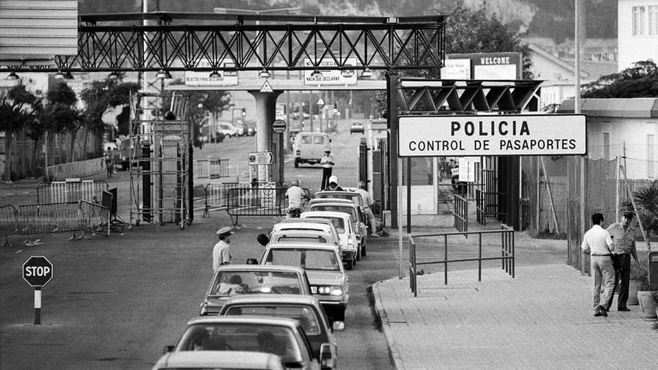

Opening the border between Spain and Gibraltar
The deal offers hope for a more pragmatic relationship between Britain and Europe
July 16th 2026

NOWADAYS IT IS commonplace to build walls between countries. But this week a barrier came down. Amid popular celebration, at midnight on July 14th border controls ceased between Gibraltar, a self-governing British sovereign territory, and Spain. Under a treaty signed the same day between the European Union and Britain, demolition of the police and customs posts at the border has started. “The last wall in continental Europe has fallen,” said Pedro Sánchez, Spain’s prime minister, as he visited the site. The treaty marks a tidying up of the mess left by Brexit. And in a region of strategic importance, in sight of the Moroccan coast, optimists hope it may herald a new era of defence co-operation between two NATO allies.
With just 40,000 people crammed into narrow strips of land beneath its towering Rock, Gibraltar depends on Spain for many things, including more than 10,000 workers who cross from the town of La Línea each day. Many Gibraltarians have second homes in Spain. Not surprisingly, 96% of Gibraltarians voted to remain in the EU because Brexit implied a hard border. That “would have been catastrophic not just for us but also for the Spanish side”, says John Isola, president of the Gibraltar Chamber of Commerce.
Under the treaty, whose 1,000-plus pages took more than five years to negotiate, Gibraltar has become a de facto part of the EU’s border-free Schengen area. Non-Gibraltarian passengers arriving at its airport, whose only flights are from Britain, will have their passports checked by Spanish police. Fabian Picardo, Gibraltar’s long-serving chief minister, calls the arrangement “fluidity”, rather than freedom of movement, since citizens of Schengen countries will not have an automatic right of residence in the territory. Gibraltar is also joining the EU’s customs union for goods. It has agreed to European standards and European taxation: having been a tax haven, it will now apply a transaction tax of 15%, rising to 17% by 2028 on goods sold in the territory. It will also set excise duties within six percentage points of Spain’s. The £10 whisky bottles in Gibraltar’s liquor stores will be no more.
Spain has long resented Britain’s control of Gibraltar, acquired in 1713, and its naval base. The treaty parks the dispute over sovereignty in favour of co-operation. “Removing the border was essential for this region to prosper,” says Juan Franco, the mayor of La Línea. Although the area includes the port of Algeciras, across the bay from Gibraltar, it is poorer than most of Spain. The hope is that stability offered by the treaty will attract investment. The region’s poor communications are an obstacle, laments Jesús Verdú of the University of Cádiz. The single-track railway to Algeciras remains closed after landslides last winter. But Gibraltar’s airport might now attract flights from across Europe.
Some among Spain’s conservative opposition dislike the treaty and think their country lost an opportunity to assert co-sovereignty. But past efforts to coerce Gibraltar, including General Franco’s closure of the border in 1969, only reinforced its separate identity as “Mediterranean British”, as locals say. If the Spanish right wins a general election due next year, as seems likely, “there might be a change in rhetoric, but that doesn’t have to mean a change on the ground”, says Mr Picardo. Importantly, some hope that as well as resolving unfinished Brexit business, the treaty might be a harbinger of a pragmatic reset between Britain and Europe. ■
To stay on top of the biggest European stories, sign up to Café Europa, our weekly subscriber-only newsletter.